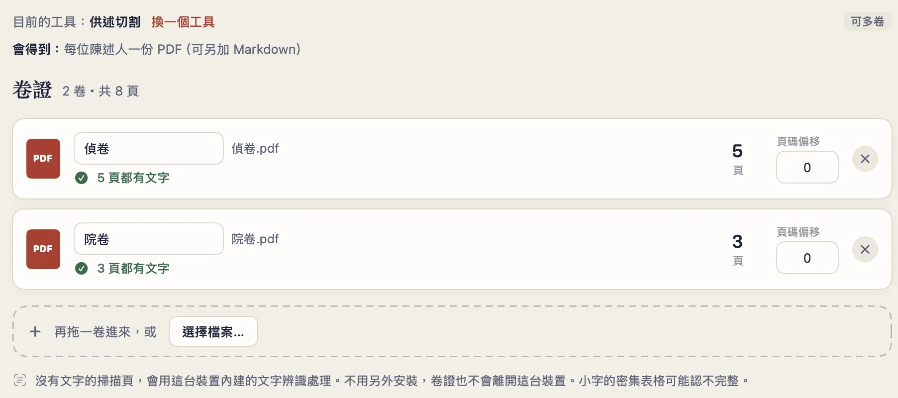
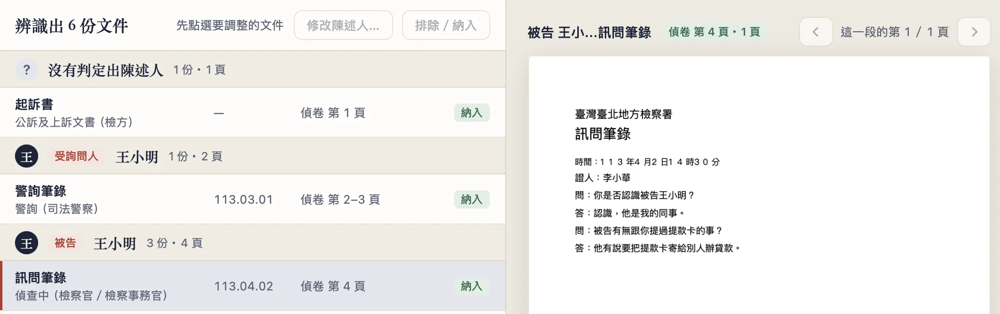
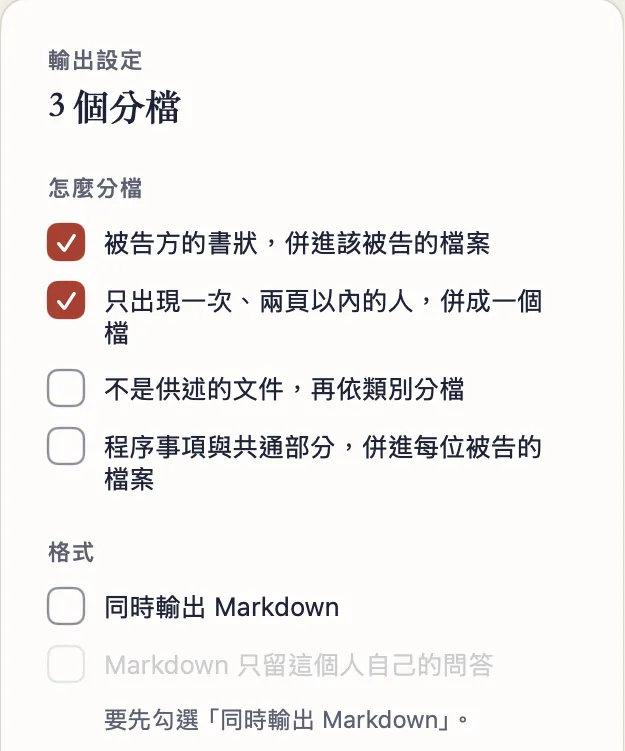
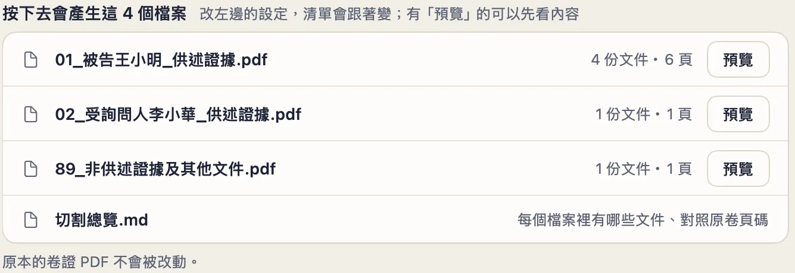
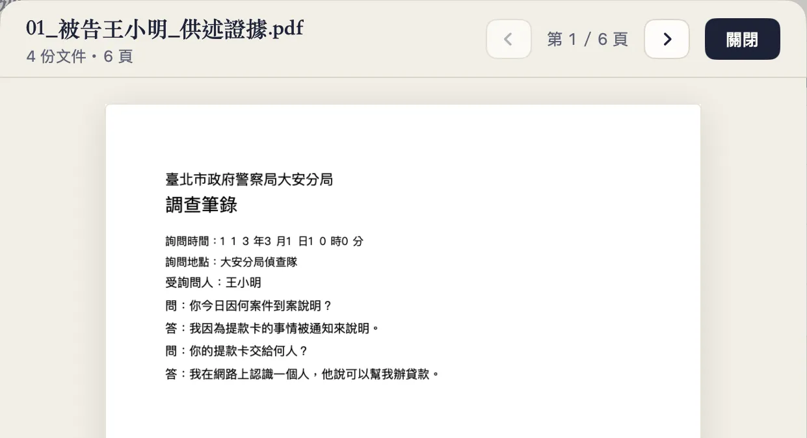

依陳述人分開筆錄：供述切割教學
準備交互詰問時，常常要把同一個人歷次的警詢、偵訊、審判筆錄排在一起看，但它們散在警卷、偵卷、院卷裡。「供述切割」從筆錄判斷陳述人與身分，把每個人的筆錄整理成一份 PDF，另附一份切割總覽，寫出每份筆錄出自哪一卷第幾頁。
這個工具做什麼
「供述切割」在首頁的「讀卷」那一組。放入一卷或幾卷卷證，App 找出每一份筆錄與書狀，從筆錄裡判斷陳述人與身分（被告、受詢問人、證人等），把同一個人的筆錄整理在一起，輸出每位陳述人一份 PDF。
這篇用兩份合成的示範卷說明：「偵卷.pdf」（起訴書、王小明的警詢筆錄、兩份訊問筆錄）與「院卷.pdf」（答辯狀、準備程序筆錄、李小華的警詢筆錄）。放入 PDF 的方法與共通步驟，在第一次使用那篇。
第一步：放入一卷或幾卷
從首頁或側邊欄點「供述切割」（Mac 也可以按 ⌘3），把 PDF 拖進來，或按「選擇檔案…」。可以一次放好幾卷，同一個人在不同卷裡的筆錄會跨卷整理在一起。

- 卷宗簡稱預設是檔名。清單和切割總覽用它標示每份筆錄的出處（例如「偵卷 第 2–3 頁」），建議改成「偵卷」「院卷」這類短名稱。
- 頁碼偏移：卷面頁碼和 PDF 頁碼對不上時填（PDF 第 1 頁是卷面第 5 頁，就填 4）。
- 掃描頁會在放進來時自動辨識文字，辨識完成前不能開始分析。有開啟密碼的卷，放進來時會就地問密碼。
放好之後，按右上角的「開始分析」。
第二步：核對陳述人
分析完成，左邊是「辨識出 N 份文件」的清單，依陳述人分組。組名寫著身分（紅字標籤）和姓名，旁邊是幾份、幾頁。找不到陳述人的文件（例如起訴書）放在「沒有判定出陳述人」那一組。
每一列是一份文件：
- 第一行是文件名稱（警詢筆錄、訊問筆錄、答辯狀），第二行是階段，例如「警詢（司法警察）」「偵查中（檢察官／檢察事務官）」「被告方書狀」。
- 右邊是日期、出處（卷宗簡稱與頁碼），最右邊的標籤是「納入」或「已排除」。
點一列，右邊顯示那份筆錄的頁面，上方寫著卷名、頁碼和「這一段的第 1／N 頁」，按左右箭頭翻其他頁。

核對的重點是：陳述人和身分對不對、一份筆錄有沒有被切成兩份或跟別份併在一起、該納入的有沒有被放進「沒有判定出陳述人」。
示範卷就有一處要改。右邊這一頁寫的是「證人：李小華」，問她認不認識被告王小明，所以陳述人是李小華；但 App 把它歸在「被告 王小明」底下。這種情形用下一節的「修改陳述人…」改正。
清單依「身分＋姓名」分組，所以同一個人以不同身分出現時，會分成兩組。示範卷裡，王小明在警詢是「受詢問人」，在偵查中是「被告」，清單上是兩組；輸出時，這兩組放進了同一個檔案「01_被告王小明_供述證據.pdf」。輸出前可以在第三步的清單確認每個檔案包含幾份文件。
分錯的時候：修改陳述人、排除、合併
清單上方有兩個按鈕，要先點選文件才能按（沒選時旁邊寫「先點選要調整的文件」）。直接點一列是只選那一列，按住 ⌘ 或 Shift 再點可以選好幾列。
- 修改陳述人…：跳出「修改陳述人」，套用到選取的文件。「角色」從選單選（被告、共同被告、犯罪嫌疑人、告訴人、被害人、自訴人、訴訟參與人、證人、鑑定證人、鑑定人、受詢問人、受訊問人、陳述人、關係人，或「（無）」），「姓名」直接輸入，按「確定」。改好的文件會移到那個人的那一組。
- 排除／納入：選到的文件標成「已排除」，輸出時不放進任何檔案；再按一次就改回「納入」。排除的列會加上刪除線，組名旁寫著「已排除 N 份」，右邊的頁面下方寫「這一份已排除。」
以示範卷為例：點偵卷第 4 頁那一列，按「修改陳述人…」，角色選「證人」，姓名輸入「李小華」，按「確定」。這份筆錄就會移到證人李小華那一組，輸出時也放進她的檔案。
App 覺得兩個名字可能是同一個人時（例如掃描辨識把一個字認錯），清單上方會出現一行「「甲」和「乙」可能是同一個人。合併後，筆錄會放進同一個檔案。」，旁邊有「合併成「…」」的按鈕。是同一個人就按合併；不是就不用理它。示範卷沒有出現這一行。
核對完，按右上角的「下一步：輸出」。
第三步：怎麼分檔
左邊的輸出設定上方寫著會分成幾個檔（例如「3 個分檔」），下面是兩組勾選：

怎麼分檔
- 被告方的書狀，併進該被告的檔案（預設勾選）：答辯狀這類被告方書狀，放進那位被告的檔案。示範卷的答辯狀就在被告王小明的檔案裡。
- 只出現一次、兩頁以內的人，併成一個檔（預設勾選）：只有一份短筆錄的人不各自成檔，合成一個檔，避免檔案太零碎。
- 不是供述的文件，再依類別分檔：起訴書等非供述的文件，預設全部放進一個「非供述證據及其他文件」；勾這項會再依類別分成幾個檔。
- 程序事項與共通部分，併進每位被告的檔案：勾了之後，每位被告的檔案都會附上這部分。被告人數多時，這部分會大量重複。
格式
- 同時輸出 Markdown：每個 PDF 另外附一份同內容的文字檔（.md）。
- Markdown 只留這個人自己的問答：要先勾選「同時輸出 Markdown」。勾了之後，文字檔只留這位陳述人自己的問答。
右邊是「按下去會產生這 N 個檔案」，每一列寫著包含幾份文件、幾頁。改左邊的勾選，清單跟著變。

PDF 可以按「預覽」一頁一頁翻，確認每個人的檔案裡放了哪些筆錄。Markdown 與切割總覽要輸出後才有內容，沒有預覽。

確認好了，按右上角的「開始輸出 N 個檔案」。
輸出的檔案
- 每位陳述人一份 PDF：檔名是編號、身分、姓名，例如「01_被告王小明_供述證據.pdf」「02_受詢問人李小華_供述證據.pdf」。
- 非供述的文件：起訴書等放在「89_非供述證據及其他文件.pdf」。排除的文件不會出現在任何檔案裡。
- 切割總覽.md：每個檔案裡有哪些文件、對照原卷的頁碼。一定會產生。
- 勾了「同時輸出 Markdown」時，每個 PDF 旁邊多一份同名的 .md。
同一個人的筆錄很多、估計超過單一檔案的上限時，那個人的 PDF 會分成幾個檔，檔名後面加上「_之1」「_之2」與各檔的頁碼範圍；輸出前的清單會寫「會分成 N 個檔」。
檔案存在「下載項目 › 審判工具箱」底下新開的資料夾（例如「偵卷 供述切割」），也可以在輸出前用「存到 › 選擇…」換位置。Mac 版可以按「交給 AI…」，請 AI 工具比對這幾份筆錄的出入，見交給 AI 的教學。
在 iPhone・iPad 上
步驟與選項跟 Mac 相同。在 iPhone 上，「開始分析」「下一步：輸出」等按鈕在畫面下方；清單點一列會整頁顯示那份筆錄，左右滑看其他頁，下方有「不要這一段」（等於排除）與「下一段」。清單每列左邊有勾選框，可以勾好幾份再按「修改陳述人…」或「排除／納入」。輸出的檔案在「檔案」App 的「我的 iPhone › 審判工具箱」。iPhone・iPad 版的畫面在iPhone・iPad 介紹頁。
做不到的事／要注意
- 陳述人是用規則從筆錄的版式判斷（「受詢問人：」「被告：」這類欄位），不是 AI 模型。版式特殊、沒有這類欄位的筆錄，可能判斷錯或歸到「沒有判定出陳述人」。輸出前請逐組核對。
- 筆錄的起點沒被找到時，那幾頁會併進前一份文件。示範卷院卷第 2 頁的準備程序筆錄，就和前面的答辯狀併成「院卷 第 1–2 頁」一份。清單上看頁碼範圍與右邊的頁面可以發現這種情形；目前不能在清單裡手動切開。
- 掃描頁靠文字辨識，人名認錯一個字，就會被當成另一個人。看到「可能是同一個人」的提示時請確認。
下一篇：幾卷一起找關鍵字：全文搜尋教學。上一篇是書籤形成。簡短的步驟在使用說明。
常見問題
可以一次放好幾卷嗎？
可以。供述切割可以一次放好幾卷，同一個人在警卷、偵卷、院卷裡的筆錄會整理進同一個檔案。
陳述人判斷錯了怎麼辦？
在確認與預覽這一步選那幾份文件，按「修改陳述人…」改角色和姓名；不要的文件按「排除／納入」排除。
可以輸出文字檔嗎？
可以。輸出設定勾「同時輸出 Markdown」，每個 PDF 會多一份 .md；再勾「Markdown 只留這個人自己的問答」，文字檔只留那位陳述人的問答。